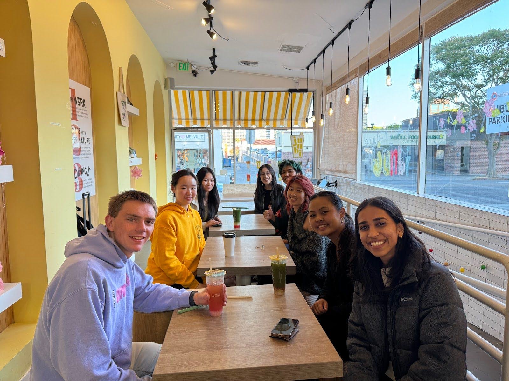

If you are a non-profit with an problem that requires a technological solution, we would be more than happy to help!
Please view this document below to began our partnership process, and we'll reach out to talk further!
If we seem like a good fit, please reach out to us at code-the-change-leadership-l@g.hmc.edu

Assistant Professor of Biology and Environmental Analysis at Pomona College,
Advisor for The Nature Conservancy Project
Over the course of just 12 weeks, the spring team conducted helpful and sophisticated initial analyses of an agroforestry dataset totaling tens of thousands of observations on carbon sequestration from thousands of scientific studies, led by Dr. Susan Cook-Patton of The Nature Conservancy (TNC). The summer team created user-friendly software with helpful tutorials over just 8 weeks which our partners at TNC, CGIAR, Smithsonian Institute, and other organizations will be taking forward to 1) accelerate the laborious process of filtering scientific studies for carbon estimates, and 2) augment scarce and highly valuable expert labor in compiling much-needed carbon and agricultural management estimates.
Liaison, American Red Cross International Service Department
With their fresh and creative perspectives, the CTC team brought to light new possibilities and ideas. They were adept professionals throughout the project lifecycle, and we recommend anyone collaborate with them - we certainly hope to do so again!